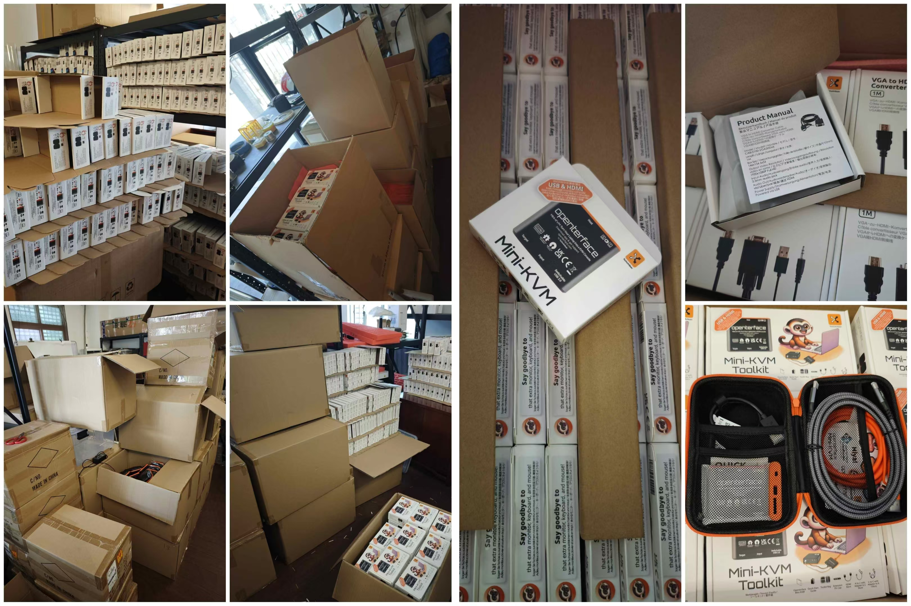
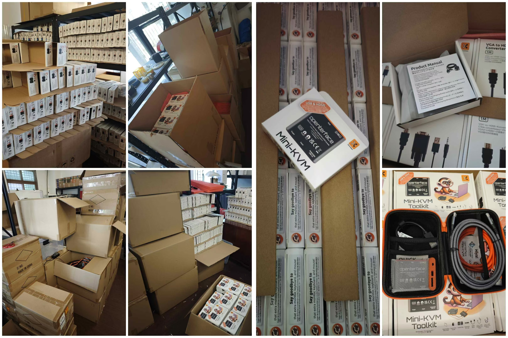

2025-05-20 | iPad KVM: Creative Bridge Between iOS and Low-Level Devices
Casey Howard's innovativ e "iPad KVM" project demonstrates exceptional problem-solving in action. As a Computer Science & Mathematics student at the University of Kentucky, where every student is issued an iPad, Casey faced a challenge: accessing and managing low-level devices directly from their iPad. After discovering that the Openterface Mini-KVM lacked native iOS connectivity, they built their own bridge.

The Challenge
- iOS locks down USB, preventing Arduino programming, BIOS-level control, and headless server access
- Casey needed a way to use their iPad as a BIOS-level console for everything from Arduinos to Ubuntu servers,without Wi-Fi, external power, or bulky peripherals
The Solution: Raspberry Pi Bridge
The project's core innovation uses a Raspberry Pi in "gadget mode" as a dual-purpose bridge:
- Draws Power
- Pi's USB-C port is configured to pull 5 V directly from the iPad
- Carries IP Traffic
- Internal network bridge carries IP packets over the same USB-C cable
- Serves VNC
- VNC server on the Pi allows direct remote desktop on the iPad,no Wi-Fi required
- Drives KVM
- OpenterfaceQT on the Pi interfaces with the Mini-KVM hardware
- iPad's VNC session streams video and sends keyboard/mouse events to any target computer
Implementation Details
-
Raspberry Pi Configuration
- Enable gadget mode in /boot/config.txt and /etc/modules
- Configure USB-C for 5 V power delivery
- Establish network bridge with static IP (10.55.0.1)
-
Remote Desktop Setup
- Install and configure x11vnc on the Pi
- Auto-start VNC server on the bridge interface
- On the iPad, connect with a VNC client (e.g., RNC Viewer) to
10.55.0.1orpi.local
-
Mini-KVM Integration
- Compile OpenterfaceQT for ARM architecture
- Plug Mini-KVM into the Pi's USB and HDMI ports
- Power the Pi via its USB-C port
-
Operation
- Connect the Pi to the iPad using a single USB-C cable
- Launch the VNC client and authenticate
- Open the Mini-KVM interface on the Pi
- Stream the target device's video feed and control it in real time
System Architecture

Components
- iPad (Host): VNC client and power source
- Raspberry Pi 5: USB gadget, network bridge, and OpenterfaceQT host
- Openterface Mini-KVM: Hardware interface for target computers
- Connectivity: USB-C (power + network), HDMI, and USB-A cables
Impact and Accessibility
With just an iPad, a Pi, and a Mini-KVM, Casey turned everyday tablets into BIOS-level consoles, no extra gear or network needed. This solution operates entirely on iPad battery power, requires no external power or internet, and remains highly portable for field use. Casey's detailed documentation and build scripts make this approach accessible to anyone with a Raspberry Pi and an iPad.
Special thanks to Casey Howard, our Hardware Hero winner in the USB-KVM DIY Challenge 2024, for expanding the Mini-KVM's capabilities and providing an elegant workaround until native iOS support becomes available. Learn more here:


 David and I can’t get enough of our hoodies—we practically live in them!😉 A huge thank you to David for sharing such an awesome photo—truly appreciated!🎉
David and I can’t get enough of our hoodies—we practically live in them!😉 A huge thank you to David for sharing such an awesome photo—truly appreciated!🎉
 
 A budget-friendly yet effective testing method.
A budget-friendly yet effective testing method. Our programme makes cable testing a breeze.
Our programme makes cable testing a breeze.